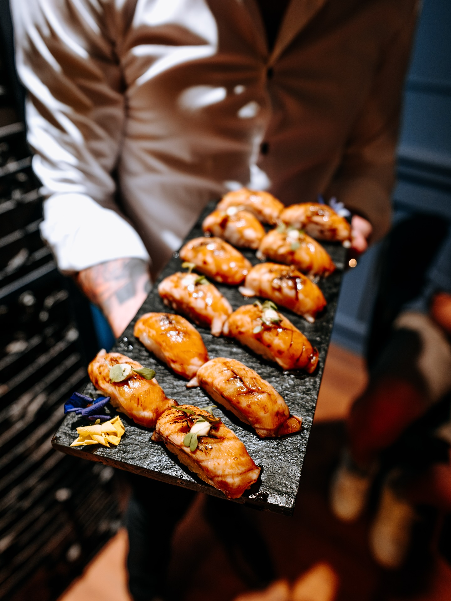
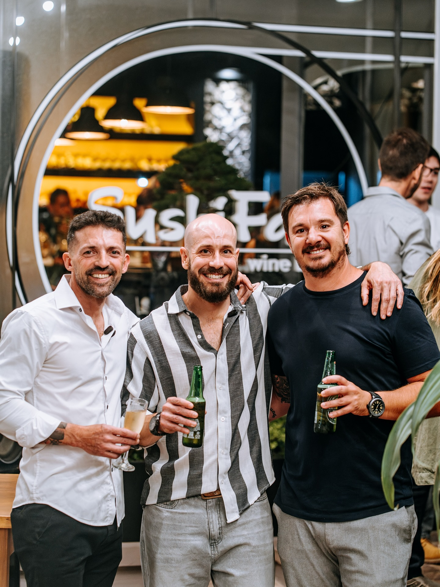
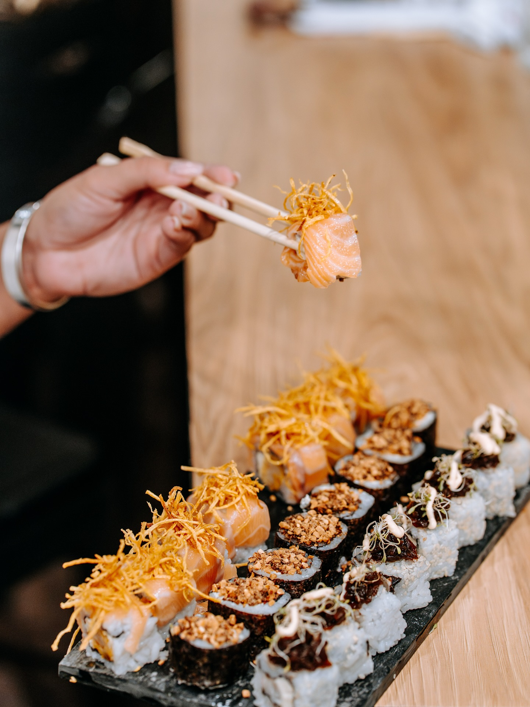
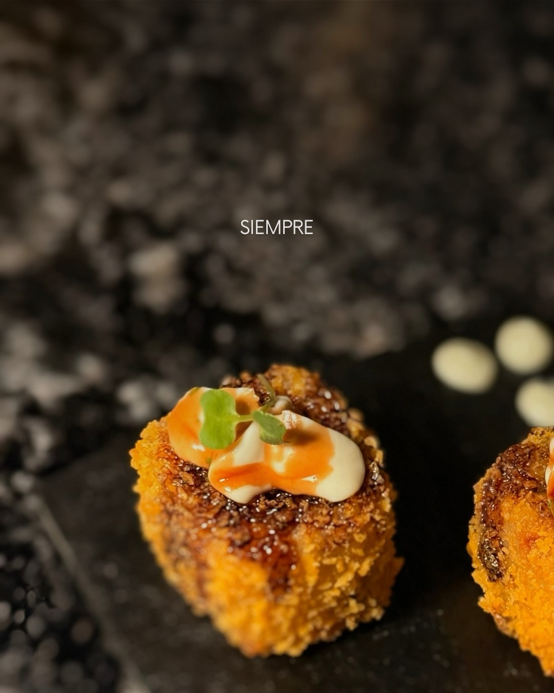
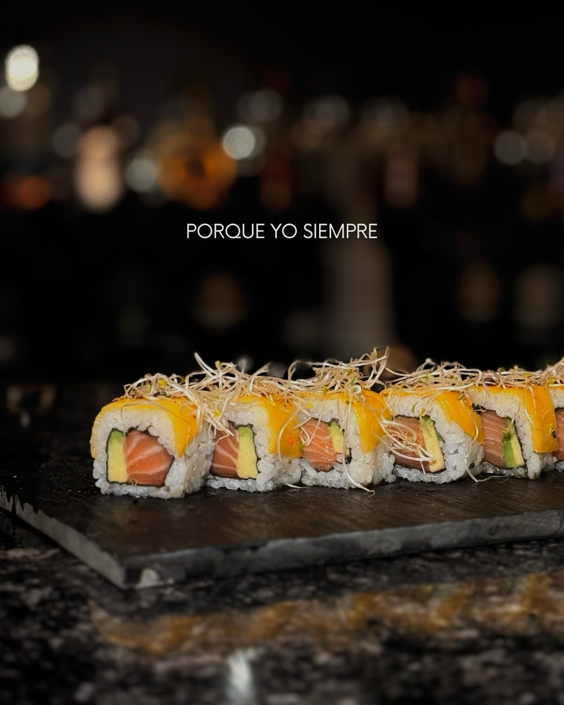
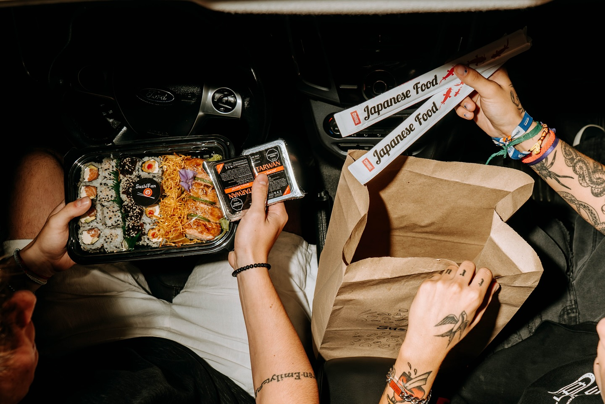
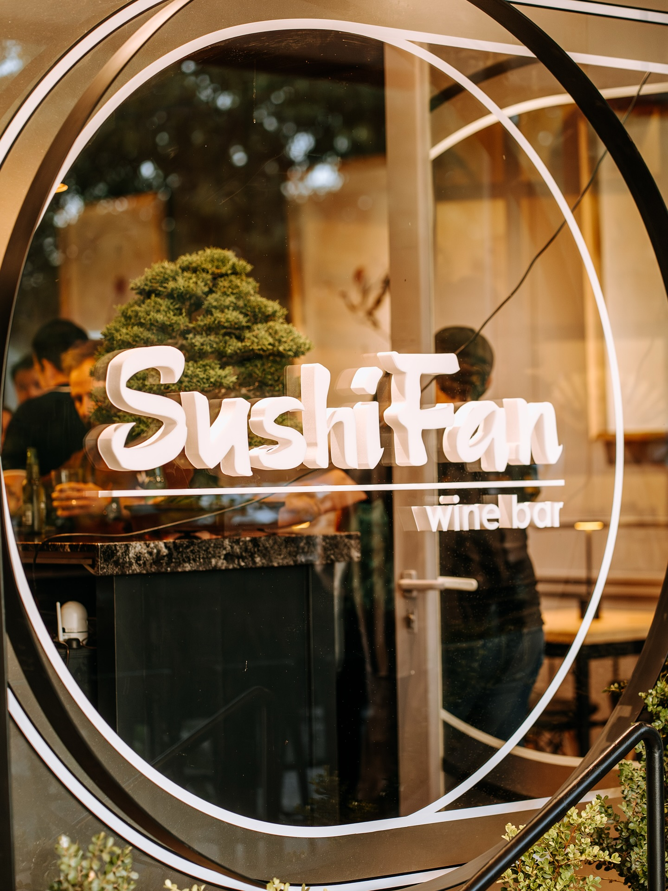

PARA SALIR
El restó
Av. Brasil 184Tandil, Buenos Aires
Jueves a domingo · 19:00 a 00:00
Reservar mesa
SUSHI FAN · TANDIL
Tu próxima salida o tu próxima tablita en casa. Elegí cómo disfrutar Sushi Fan en Tandil.
01 / QUIÉNES SOMOS
Hay planes que empiezan con una mesa y terminan en una historia para contar. En Sushi Fan nos gusta encontrarnos alrededor de buena comida, copas y ganas de pasarla bien.
Vení al restó o llevá ese momento a casa. El plan lo elegís vos.
Conocenos en Instagram
UN LUGAR PARA ENCONTRARNOSHECHO PARA COMPARTIR
Un recorrido por los sabores y momentos de Sushi Fan.
DESLIZÁ PARA DESCUBRIR




04 / ENCONTRANOS
Dos maneras de disfrutar Sushi Fan. Elegí tu plan.
PARA SALIR
Jueves a domingo · 19:00 a 00:00
Reservar mesaPARA LLEVAR
Miércoles a sábado · 19:00 a 00:00
Armar pedidoHorarios y contactos tomados del material de referencia. Confirmalos con el local antes de visitarnos.